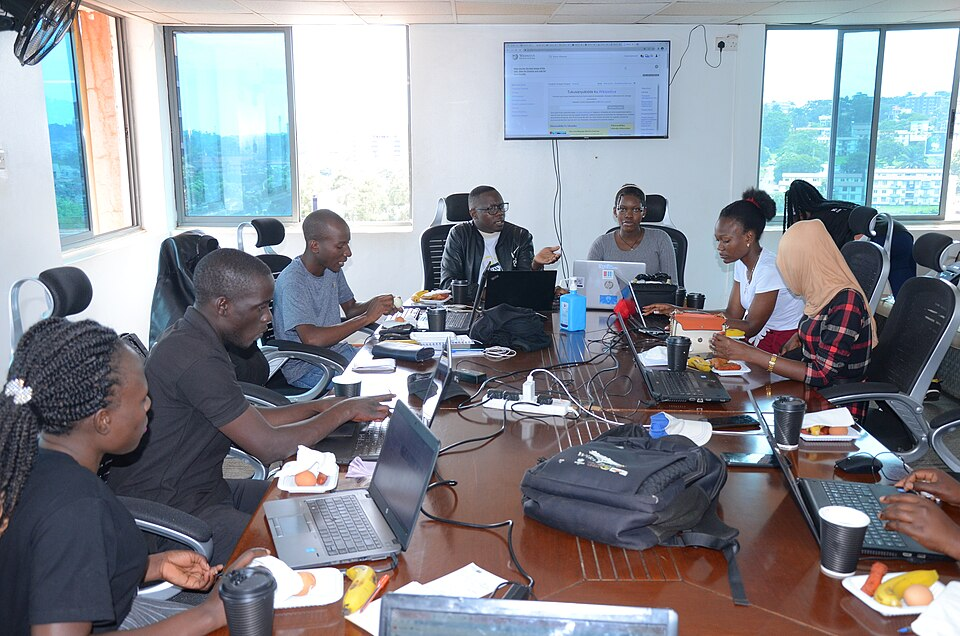
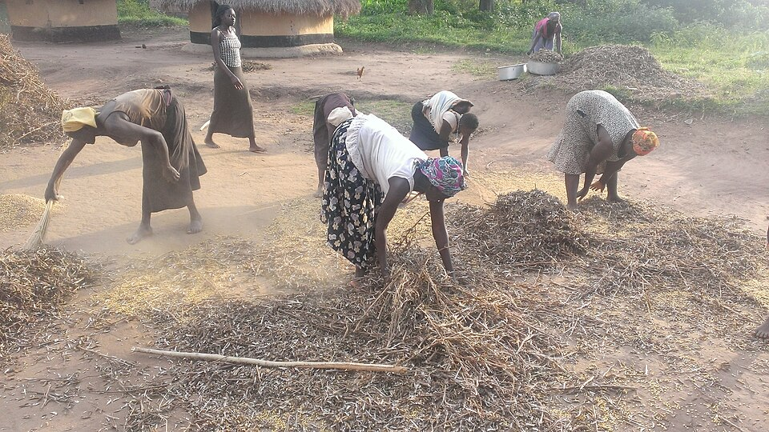
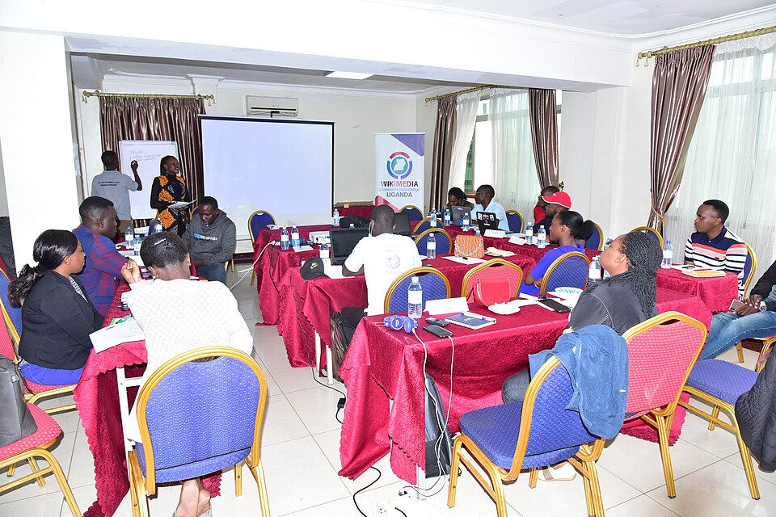

02
Sanitation & hygiene
Promoting better hygiene and solid waste management for a cleaner, healthier and more dignified living environment.
Resident-ranked #2Community-led action · Mulago II, Kampala
We bring residents together to shape a cleaner, healthier, safer and more self-reliant Mulago II—where everyone can live with dignity and justice.
Action for Holistic Development and Rights
“Dignity in Action, Justice for All”
Who we are
Action for Holistic Development and Rights (AHDR) is a community-based organization serving Mulago II Parish in Kawempe Division, Kampala.
We mobilize and empower residents to address environmental, health, economic and social challenges through community-led initiatives, strategic partnerships and rights-based advocacy.
Established in 2026, AHDR is a parish-level CBO. Its organizational profile states that it is governed under Uganda’s Non-Governmental Organisations Act, 2016.
Our values in actionWhere we focus
Our work responds to priorities identified by Mulago II residents. Each focus area is connected to the others—and shaped by the community.
Community-led channel maintenance, infrastructure advocacy and environmental conservation to reduce flooding and manage local risks.
Promoting better hygiene and solid waste management for a cleaner, healthier and more dignified living environment.
Resident-ranked #2Health education, disease prevention and support to help residents access local health services.
Resident-ranked #3Vocational skills, income-generating opportunities and financial literacy to build self-reliance.
Skills · Opportunity · Self-relianceNeighborhood watch initiatives, conflict resolution and community-building for peaceful coexistence.
Resident-ranked #4Our community
Established in 1930, Mulago II is one of Kawempe’s oldest neighborhoods, shaped by the energy and resilience of its residents. AHDR’s priorities are grounded in the challenges people have identified in their own neighborhood.
See how we respondApproximate figures from AHDR’s organizational profile.
People & participation
These photographs show community learning and livelihoods in Uganda. They are illustrative images—not photographs of AHDR or activities in Mulago II.



How we work
AHDR is guided by its members and an elected Executive Committee, with community participation at the heart of its approach.
The General Assembly, comprising all paid-up ordinary members, is AHDR’s supreme governing body and convenes at least once a year.
Ordinary membership is open to Mulago II residents aged 18 and above who accept the Constitution. Associate members are local institutions that support AHDR’s objectives; honorary members are recognized for exceptional contributions. Only ordinary members have voting rights.
A seven-member Executive Committee is elected for a two-year term, renewable once. Its roles are Chairperson, Vice Chairperson, Secretary, Assistant Secretary, Treasurer, Publicity Secretary and Mobilization Officer.
Five thematic sub-committees focus on sanitation and environment; health promotion; drainage and flood management; livelihoods and empowerment; and security and social cohesion.
AHDR’s stated controls include dual signatories—the Chairperson and Treasurer—an annual internal audit, and a financial year running from 1 January to 31 December. Funds are not for personal benefit to members.
Funding sources include membership fees, lawful donations and grants, community fundraising, and contributions from partner organizations and well-wishers.
We respect every person’s dignity, promote fairness and rights, welcome inclusive participation, and aim to operate openly. AHDR is non-partisan and does not affiliate with political parties or engage in partisan activities.
Connected to wider goals
AHDR’s objectives align with Uganda Vision 2040 and the Sustainable Development Goals, including:
Be part of the conversation
Interested in learning more, connecting with AHDR, or exploring ways to support community-led work in Mulago II? Get in touch.
Mulago II, Triangle Zone
Kawempe Division, Kampala, Uganda